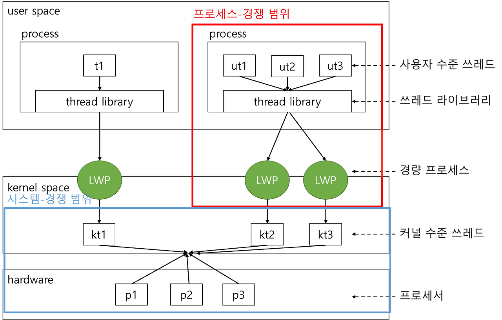
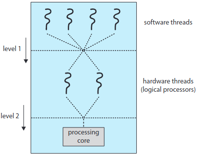

Cpu 버스트가 발생한 후에 I/O요청이 발생하면 I/O 버스트가 수행되는데 ( Context Switch 발생 = dispatch latency ) , I/O 요청이 완료될때까지 프로세스는 대기해야한다. 이때 , Cpu 가 해당 프로세스를 계속해서 할당받고 있으면 , 다른 모든 프로세스도 대기하는 상황이 생긴다. 이를 해결하기 위해 Os 는 준비 큐 PCB 형태로 프로세스들을 대기 시키고 스케줄링 알고리즘을 사용하여 다음 작업을 선택해 Cpu에 할당한다.
- 선점 preemptive : 스케줄러가 할당 되어진 프로세스를 중단 가능 (race condition 생김)
- 비선점 non-preemptive : 할당되어진 프로세스가 완료할 때까지 중단 불가능
스케줄링 알고리즘
FCFS
- Cpu 버스트 시간이 크게 변할 수록 평균 대기 시간도 크게 차이가 난다.
- 이를 Convoy Effect 호위 효과 라고 한다.
- 비선점형
SJF
- 평균 대기 시간이 최적이지만 , 실제로는 Cpu 버스트를 측정할 수 없다.그렇기 때문에 이전의 cpu 점유율로 근사 값을 계산한다.
- 비선점형
SRT - 선점형 SJF
RR
- preemptive fcfs와 유사하다.
- time quantum ( time slice) 을 기준으로 ready 큐의 프로세스를 cpu 로 할당 한다.
- time qunatum 이 너무 커지면 실직적으로 FCFS 방식으로 동작한다.
Priority scheduling
- sjf 는 우선순위 스케줄링에 포함된다. ( Cpu 버스트 시간)
- 우선순위가 같다면 FCFS 로 처리된다.
- 선점형 , 비선점형이 가능하다.
- indefinite blocking , starvation (deadlock)문제가 존재할 수있다.
- starvation 문제를 aging 오래 대기하는 프로세스의 우선순위를 점진적으로 증가시켜 해결할 수 있다.
- RR 과 결합해 우선순위가 같은 프로세스끼리는 RR 방식으로 처리할 수 있다.
Multilevel Queue
- Priority scheduling 에서 우선순위를 결정하기 위해 O(n)의 검색이 필요하다.
- 우선순위별로 다른 대기 큐를 두어 큐의 우선순위 별로 스케줄링 된다.
- 같은 우선순위 큐에 여러 프로세스가 대기 중일경우 RR 로 동작한다.
- 큐 마다 요구 사항에 따른 스케줄링 알고리즘이 적용될 수 있고, 큐 와 큐 끼리도 스케줄링이 필요하다.
Multillevel Feedback Queue Scheduling
- 다단계 피드백 큐에서는 프로세스가 어떠한 우선순위 큐에 고정되어 대기한다.
- 이 스케줄링은 프로세스가 큐들 사이를 이동하는 것을 허용한다.
- Cpu 버스트 성격에 따라 프로세스들을 구분하는데 , Cpu 버스트 시간이 길 수록 낮은 우선순위의 큐로 이동한다.
- 낮은 우선 순위 큐에 프로세스들의 기아 상태를 해결하기 위해 aging 을 적용한다.
- 우선 순위가 높은 큐에 프로세스가 쌓이면 , 우선 순위가 낮은 큐의 프로세스가 실행 중일때 스케줄러는 이를 선점한다.
- 각 큐는 time quantum을 갖어 , time quantum 안에 작업을 완료하지 못하면 , 낮은 우선순위의 큐로 프로세를 이동시킨다.
스레드 스케줄링
운영 체제가 스케줄링 하는 대상은 프로세스가 아니라 커널 수준의 스레드이다. 사용자 스레드는 LWP 를 통해 커널 스레드와 사상 되기 때문이다.
경쟁 범위
- 프로세스 경쟁 범위 ( PCS ) : 프로그래머가 user thread 를 lwp 상에서 스케줄 하는경우 동일한 프로세스에 속한 스레드들 사이에서 cpu 를 경쟁 하는것
다대일 또는 다대다 모델 - 시스템 경쟁 범위 ( SCS ) : Lwp의 커널 스레드들을 실제 물리적인 cpu 코어에 스케줄링이 필요하다. 시스템에 존재하는 모든 쓰레드끼리 경쟁상태에 놓이게 된다.

다중 처리기 스케줄링
다중 코어 시스템에서 여러 스레드가 병렬로 실행 될 수 있어 load sharing 이 가능 해진다.
다중 처리기 스케줄링 접근법
비대칭 다중 처리 (asymmetric multiprocessing)
master server 인 하나의 처리기가 모든 스케줄링 결정과 i/o 처리 다른 시스템의 활동을 취급한다.
대칭 다중 처리 ( symmetric multiprocessing; smp )
각 프로세서가 스스로 스케줄링 할 수 있다.
- 공통 준비 큐 : 경쟁 조건을 해소 해야 한다.
- 개별 준비 큐 : 큐마다 부하의 양이 다를 수 있어 균형 알고리즘이 필요하다.
다중 코어 프로세서
다중 코어 프로세서를 사용하는 SMP 시스템은 각 CPU가 각각의 물리칩을 갖는 시스템에 비해 속도가 빠르고 적은 전력을 소모한다.
프로세서가 메모리에 접근할 때 데이터가 가용해지기를 기다리면서 시간을 허비하는 메모리 스톨 현상이 생긴다.
메모리 스톨 현상을 해결하기 위해서 코어에 2개 이상의 하드웨어 스레드를 할당해 ( 하이퍼 스레딩 ), 한 스레드가 메모리를 기다리는동안 코어가 다른 스레드로 전환한다.
하드웨어 스레드는 운영체제 입장에서는 소프트웨어를 실행할 수 있는 실제 CPU 로 인식 된다.예를들어 듀얼 코어 cpu 는 운영체제 입장에서 4개의 논리적 Cpu 가 존재한다.
하이퍼 스레딩 ( simultaneous multithreading) : 코어 하나에 여러 하드웨어 스레드를 할당 하는것 , 물리적 코어는 하드웨어 스레드간 자원을 공유하기 때문에 하드웨어 스레드는 동시에 하나만 실행 가능하다.
스케줄링 2단계

- 운영 체제가 하드웨어 스레드에서 실행할 소프트웨어 스레드를 결정 (스케줄링 알고리즘 사용)
- 각 코어가 실행할 하드웨어 스레드를 결정 ( 하드웨어 스레드는 하나씩 실행 가능 )
- 라운드 로빈
- intel itanium 사용 , 긴급도에 따라 스레드를 교환한다.
os 스케줄러가 프로세서의 자원 공유를 인식 하고 있으면 , 다른 코어에 존재하는 하드웨어 스레드에 작업을 분배하여 스케줄링 할 수있다. 이는 자원의 공유 문제로 인해 생기는 실행 속도 차이를 해소 한다.
load balancing
대칭 다중 처리 (SMP)시스템에서 모든 처리기에 부하를 균등하게 배분하는것 , 각 처리기는 고유한 준비큐가 존재 해야한다.
공통 준비큐 방식을 사용할 경우 필요 없음
- push 이주 : 특정 태스크가 주기적으로 처리기의 상태를 감시하고 부하 분배
- pull 이주 : 쉬고 있는 처리기가 바쁜 처리기의 대기 큐에서 프로세스를 가져옴
처리기 선호도 , Processor Affinity
스레드가 처리기에서 실행 될때 스레드에 접근된 데이터가 할당 된 처리기의 캐시에 저장 되는데 이를 Warm Cache 라고 한다.
warm cache 를 활용하기 위해서 smp 시스템 에서는 스레드를 다른 프로세서로 이주하지 않고 계속 같은 프로세서에서 실행하는데 이를 처리기 신호도 라고한다.
대칭 다중 처리 방식에서 공통 준비 큐 , 개별 스레드 큐 두가지 전략이 사용가능한데, 자신만의 큐를 프로세서가 가지고 있어야 warm cache 가능
- 약한 선호도 : 동일한 처리기에서 프로세스가 실행 되도록 노력하지만 , 이를 보장 x
- 강한 선호도 : 프로세스가 자신이 실행될 처리기를 명시하는 시스템 콜 제공
로드 밸런서는 처리기 선호도의 이점을 없앨 수 있다. 부하를 균등하게 배분하는 시점에서 처리기의 위치가 변경될 수 있기 때문이다.
실시간 CPU 스케줄링
- 연성 실시간 시스템 : 중요한 실시간 프로세스가 스케줄 되는 시점에 대해 보장하지 않고, 우선순위만 가진다. ( 선점형 우선순위 스케줄링)
- 경성 실시간 시스템 : 태스크가 반드시 마감시간 까지 서비스 받는것을 목표로한다. 승인 제어 알고리즘 ( 스케줄러가 마감 시간에 완수할 수 있는 프로세스만 실행)
어떤 이벤트가 발생후 알맞은 서비스가 수행될 때까지의 시간을 이벤트 지연시간 이라고 한다. 지연 시간의 유형에는 아래 두가지가 있다.
-
인터럽트 지연시간 : 인터럽트 처리 루틴 시작 시간
-
디스패치 지연 시간 : 문맥 교환
스케줄링 기법
-
Rate monotonic 스케줄링
-
earliest deadline first 스케줄링
-
일정 비율 몫 스케줄링 ( proportionate share scheduling)